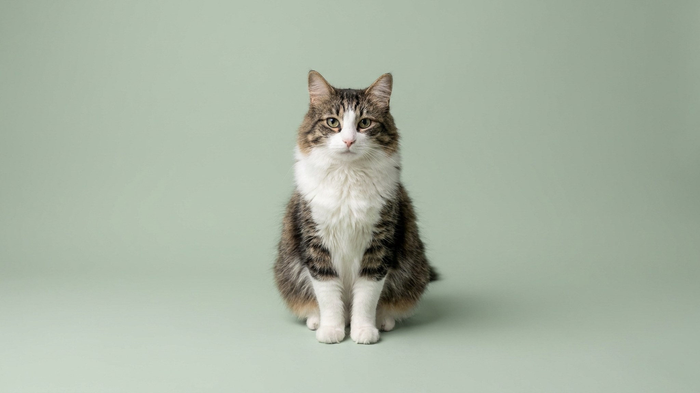

Кошка, которая сама лезет в наполненную ванну и подставляет лапы под струю из крана, — это не странность характера, а порода. Анатолийская кошка складывалась в турецких деревнях без вмешательства заводчиков, поэтому у неё крепкое здоровье и ясный деятельный нрав. Её постоянно путают с ангорой и ваном, хотя это самостоятельная природная порода. Разберём характер, уход и чем анатолийка отличается от знаменитых землячек.
🐾 У вас анатолийская кошка?
AnimaLife соберёт уход под породу: к каким болезням есть склонность, что проверять по возрасту, чем кормить и когда пора к врачу. Бесплатно, прямо в мессенджере.
Собрать план ухода → Собрать в MAX →
У вас iPhone? AnimaLife есть в App Store
Анатолийская (турецкая короткошёрстная) кошка родом из региона Анатолия — той же местности у озера Ван, что дала миру турецкого вана. Веками эти кошки жили рядом с человеком, но выживали самостоятельно, и естественный отбор дал крепкое, выносливое животное. Любовь к воде — региональная черта: предки не боялись водоёмов, и современная анатолийка охотно играет с водой, а порой и плавает. Так что мокрые следы у миски — это порода, а не каприз.
Анатолийская кошка — активный, общительный компаньон с сильным голосом.
Шерсть короткая, без тяжёлого подшёрстка — ухода немного:
Турецкая ангора — изящная, чаще длинношёрстная и белая. Турецкий ван крупнее, полудлинношёрстный, с характерным окрасом «ван» (цветные голова и хвост при белом теле). Анатолийская кошка — короткошёрстная, среднего размера, крепкого «деревенского» сложения и в самых разных окрасах. Проще всего запомнить так: ван и ангора — «выставочные» родственники, анатолийка — их природная, более простая в уходе родня.
Анатолийская кошка — для тех, кто хочет активного, разговорчивого и привязанного друга, а не тихого соседа по дивану. Она ладит с детьми, которые играют без грубости, и с дружелюбными животными при спокойном знакомстве. Одиночество переносит средне — ей нужна либо компания, либо насыщенная среда. Порода редкая: у заводчика уточняйте происхождение и условия, смотрите на социализацию котят. Выбирайте активного, любопытного малыша, который сам идёт на контакт.
Материал носит информационный характер и не заменяет очную консультацию ветеринара.
🐾 Ваш питомец — анатолийская кошка?
Заведите профиль в AnimaLife: приложение запомнит породу, возраст и вес и будет подсказывать по уходу именно для неё. Вопросы AI-ветеринару — круглосуточно и бесплатно.
Завести профиль → Завести в MAX →
У вас iPhone? AnimaLife есть в App Store
🐾 Понравился разбор?
Подпишитесь на канал — каждый день разбираем по одному тревожному симптому у кошек и собак: что в пределах нормы, а когда пора к врачу. Подпишитесь, чтобы не пропустить разбор, который может спасти здоровье вашего питомца.